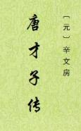

| 历史 > |
| 唐才子传 |
| [元]辛文房 编撰 |
|
唐才子传，十卷，日本《佚存丛书》本，有278位诗人小传，传中附及120，合计398人。按诗人登第先后为序，保存了唐代诗人大量的生平资料，对其科举经历的记叙更为详备。传后又有对诗人艺术得失的品评，多存唐人旧说，其中颇有精辟之见。但所述多有失实﹑谬误之处，如谓骆宾王与宋之问唱和灵隐寺，《中兴间气集》为高适（实为高仲武）所编，李商隐曾为广州都督等。也有因误解材料而造成错误，如刘长卿传，记权德舆称刘长卿为“五言长城”，而据权德舆《秦徵君校书与刘随州唱和诗序》，实是刘长卿“自以为五言长城”等。 辛文房，西域人，能诗，泰定元年官居省郎之职。此书成于大德八年(1304年)。原书失传，乾隆时，四库馆自《永乐大典》中辑得243人传，又附传44人，共287人，厘为8卷。后元刊10卷足本在日本发现，光绪中，黎庶昌以珂罗版影印归国，始广流传。 （2021/2/5 整理） |
 |
|